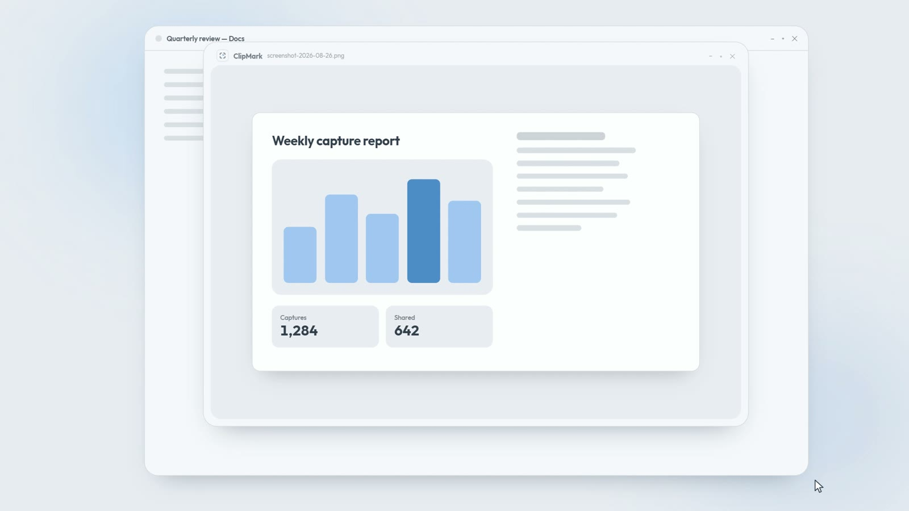
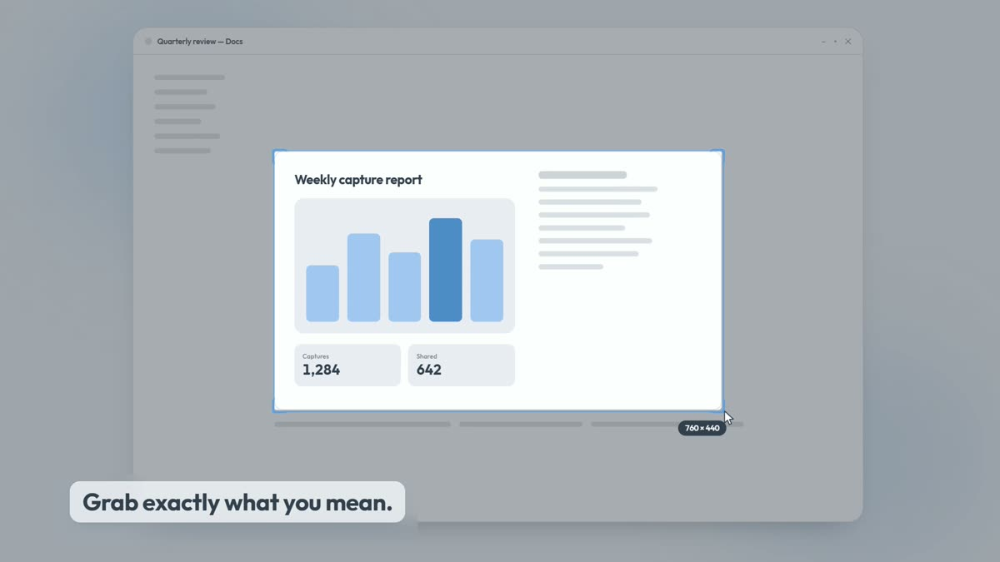
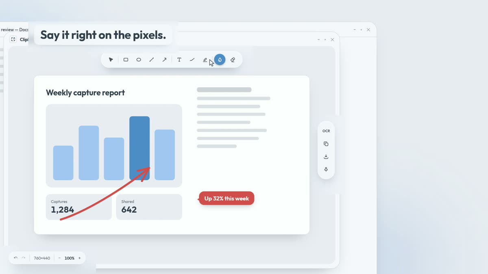
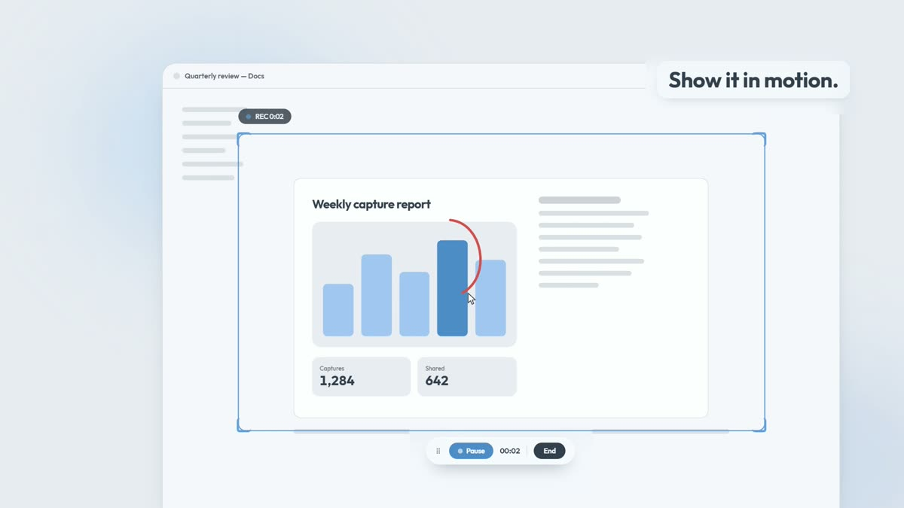
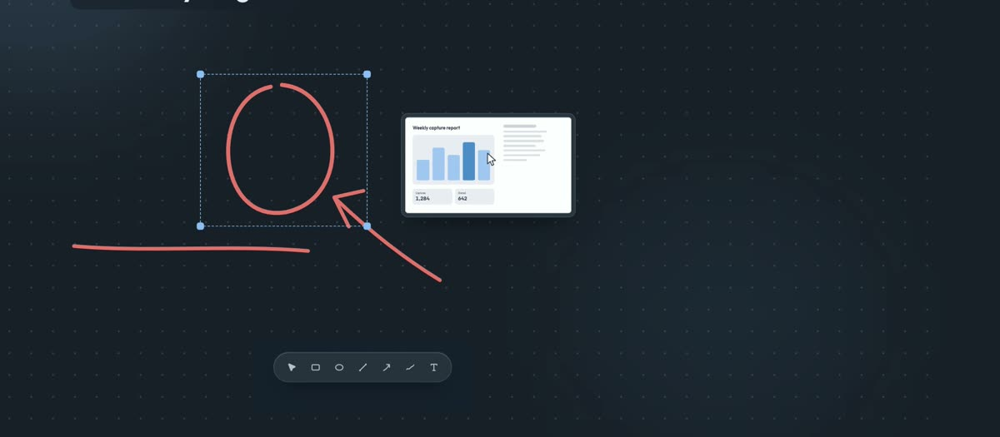

ClipMark for WindowsYour system
Loading
- Released
- Size
- Downloads
ClipMark grabs any part of your screen and drops it straight into a fast markup editor. Point with an arrow, call it out, blur what is private, then paste it wherever the conversation is.
Installers come straight from this project's GitHub releases. See every version.

What it does
One shortcut to capture, one click to mark it up, and a set of small tools for everything around a screenshot.
Drag a region, click a window, or take the whole screen. For pages longer than your display, scrolling capture scrolls for you and stitches one tall image.

The editor opens the moment you capture. Everything is a vector you can move, restyle or undo, and the canvas grows when you draw past the edge.

Record a region of the screen when a still image is not enough. Save an MP4 or a GIF, and paste the result straight into chat.

Bring captures onto an infinite canvas and sketch over them. Sticky notes, connectors that hold onto their anchors, page margins for printing, and snapshots to step back in time.

Capture, mark up, share, record and sketch, the way it looks on screen.
Mac and Windows
The Windows app is built on .NET and WPF. The Mac app is written from scratch in Swift and AppKit, so it looks and behaves like a Mac app. Screen recording is Windows-only for now.
ClipMark-Setup-<version>.exeThe installer is not code-signed yet, so Windows SmartScreen may warn on first run. Choose More info, then Run anyway.
.dmg, drag to ApplicationsOn first capture, allow Screen Recording in System Settings. Auto-scroll in scrolling capture also asks for Accessibility; manual scrolling does not need it.
| Feature | Windows | macOS |
|---|---|---|
| Region, window and full-screen capture | Yes | Yes |
| Scrolling capture with auto-scroll | Yes | Yes |
| Annotation editor | Yes | Yes |
| OCR copy text | Yes | Yes |
| Pin, history, color picker, ruler | Yes | Yes |
| Whiteboard with PNG, JPEG and PDF export | Yes | Yes |
| Screen recording (MP4, GIF) | Yes | Not yet |
| Default shortcuts | Alt+Shift+1 area | Option+Shift+1 area |
The newest build for each platform, and what changed in every version.
Loading
Loading
The Windows app checks this project's latest release and offers the new installer when there is one. The Mac app checks for new Mac builds too: it tells you when one is out and opens its download page, so you install it yourself by dragging it to Applications.
The Windows installer is not code-signed yet, so SmartScreen does not recognise it. Choose More info, then Run anyway. The Mac app is signed with an Apple Developer ID and notarized by Apple.
Screen Recording, so it can capture the screen at all. Accessibility is only requested if you use auto-scroll in scrolling capture. Both are granted in System Settings, Privacy and Security.
This repository holds installers and the update feed only. The source is kept private.